made with liquid clips · bug demo
Pixel invader bug — static + animated.
Master SVG at desktop/src/assets/made-with-liquid-clips.svg. Brand-kit anchored (fuchsia #FF1A8C, ink, paper). The path data matches PixelInvader.tsx verbatim — one source of truth for the 15-rect glyph. Intro sting plays for 1s, then a persistent 10s micro-pulse loops while the consumer keeps the SVG mounted. When rasterized to PNG or rendered inside an <img> tag, the animations are inert and the file paints its final frame — the same asset serves both use cases.
animated · inline svg
end-card size (480 × 120)
watermark size (240 × 60)
corner bug size (120 × 30) — bottom-right of a clip
static · img tag
animations inert · paints final keyframe

composited over a vertical clip frame
free-tier export preview
animation spec
| moment | timing | what happens |
|---|---|---|
| intro sting | 0 – 1s | scale 0.6 → 1.15 → 1.0, opacity 0 → 1, cubic-bezier(0.22, 1, 0.36, 1) |
| wordmark reveal | 0.5 – 1.5s | "MADE WITH" + LIQUID/CLIPS fade in + slide-right 6px → 0 |
| persistent pulse | 1.1s+ · 10s loop | drop-shadow glow oscillates 12px → 22px fuchsia, ease-in-out |
| reduced motion | media query | all animations off, paint final keyframe statically |
acceptance checklist
✓ Single SVG serves static and animated consumers.
✓ Brand kit pure (fuchsia #FF1A8C · ink · paper). Brand-drift check green.
✓ Invader path = PixelInvader.tsx (15 rects, verbatim).
✓ Wordmark uses Geist display + mono (canonical Liquid Clips type).
✓ Respects prefers-reduced-motion.
– ffmpeg integration into the export pipeline (free-tier watermark) ships in a follow-up commit once you green-light the placement.